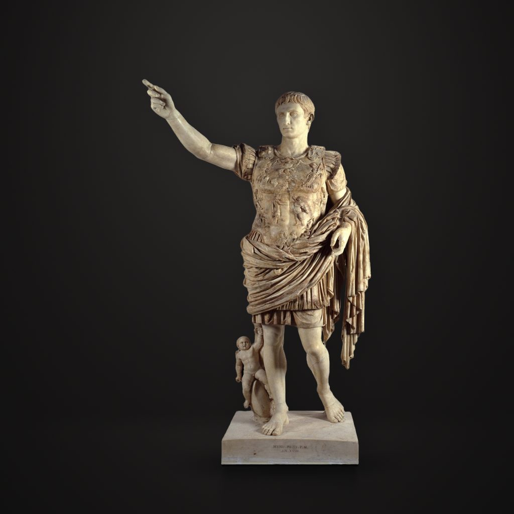

普里馬波爾塔的奧古斯都
古羅馬 · 公元1世紀初
Augusto di Prima Porta
導賞節錄
佢伸出右臂，好似正向士兵講嘢。
呢尊係《普里馬波爾塔的奧古斯都》。奧古斯都係羅馬第一位皇帝，眼前呢尊大理石像大約兩米高，年代大約喺公元一世紀初，依家收藏喺梵蒂岡博物館新翼。「普里馬波爾塔」係發現地嘅名，喺羅馬北郊。雕像喺奧古斯都妻子莉薇婭嘅別墅出土。
— 廣東話講稿 · Artvery
完整講解約 4 分鐘，可在 Artvery App 收聽。粵語、台灣國語、內地普通話三種語音，館內對準作品即可識別播放。
在 App Store 下載
App 免費下載，每座博物館單獨購買，一次購買永久使用。目前在香港、澳門、台灣、新加坡、馬來西亞、英國、美國、加拿大、澳洲、紐西蘭、挪威、瑞士的 App Store 提供，暫未在中國內地上架。
作品資料
- 文化
- 古羅馬
- 年代
- 公元1世紀初
- 位置
- 梵蒂岡博物館 · 新翼（Braccio Nuovo）
- 館藏編號
- 2290
梵蒂岡博物館參觀攻略：必看名作和路線 · 梵蒂岡博物館廣東話語音導賞